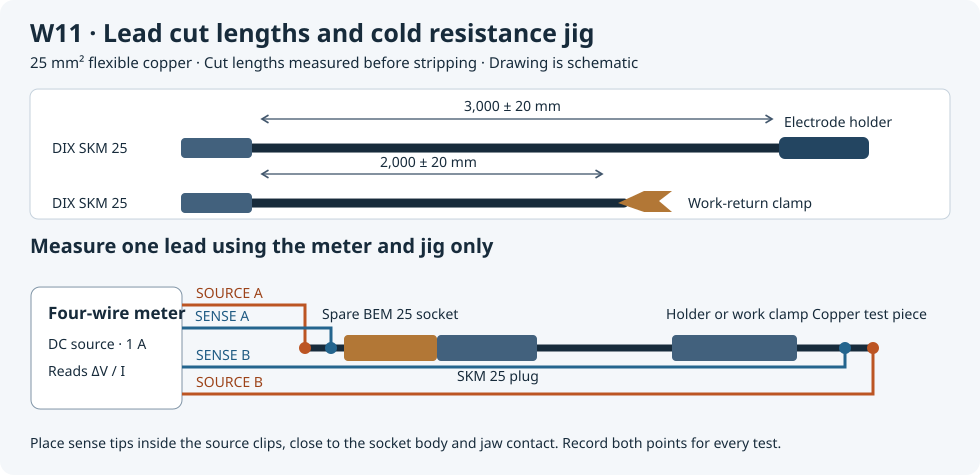

Make and test a welding lead set
Make a 3 m electrode lead and a 2 m work-return lead for the 120 A stick welder. Fit both ends by hand and measure the finished connections before the leads reach the powered test bay.

Photo by Bruno Bouygues. Original photograph · CC BY-SA 3.0.

Watch the four-wire meter demonstration. Identify the clip leads, the low-resistance range and the offset compensation setting. Keep this setup at the disconnected cable bench. Hioki · RM3548-50 introduction.
Watch the lead hookup. Observe how the machine sockets and the workpiece clamp connect before welding. Consult the electrode instructions to select polarity. Miller Electric · Stick-welding setup.
Order the parts in India
Buy enough for one pair and a trial termination before ordering for ten machines. Price references are from 22 November 2026 using one-unit listings unless stated. Ask for GST, freight, lead time and installation instructions with each quote.
| Qty and part | Specification and India source |
|---|---|
| 5.5 m · 25 mm² copper cable View cable | Polycab H01N2-D, 25 mm² fine-stranded bare copper, nominal stranding 760 × 0.2 mm, about 11 mm outside diameter. Maximum conductor resistance is 0.78 Ω/km at 20 °C. Quote a cut length and request cable markings, batch details and the current/duty data for your use. A separate retail comparison is Techno Tronics 25 mm² at about ₹1,469 per 5 m. Obtain its own resistance and duty data if substituting. Polycab · Product and enquiry · Polycab · Datasheet · Moglix · Price comparison. |
| 2 · DINSE DIX SKM 25 plugs View plug | Buy DINSE 122100020 with its rubber boot, clamping sleeve and M8 screw. Request the insert for 25 mm² and confirm the boot fits the measured jacket. The manufacturer rates the 16–25 mm² version at 190 A at 60% duty and lists replacement sleeve 199200015. Get the importer to confirm the complete assembly and current installation sheet. DINSE · Catalogue · Rajyog Enterprises, Pune · Request exact parts and a quote · Kewell · Plug photograph. |
| 1 extra · DINSE DIX BEM 25 test socket View socket | Buy a matching 121300020 in addition to the two installed on the machine. The rear M8 terminal gives a repeatable test contact. Mount it in a rigid scrap insulating plate, drill to the fitting drawing and label it Meter fixture only. Price this separately with the plug order. Kewell · Socket photo · DINSE · Socket and installation dimensions. |
| 1 · APS holder View holder | APS EHL 200A 38400506, listed at 200 A at 35% duty and 150 A at 60%. Its stated ranges are 16–35 mm² cable and 2.4–4.0 mm electrode. Ask APS to quote the holder, approved lug geometry, bolt torque, strain relief and the assembly sheet. APS Welding · India quote, photo and duty ratings. |
| 1 · Metal Arc work-return clamp View clamp | Metal Arc UE3B2 2100008751, brass jaws, bolt-down termination. The single-piece Moglix listing quotes ₹862 including taxes with availability on request. Ask Metal Arc to confirm the duty at 120 A, mating lug, bolt torque and minimum order. The manufacturer's listed bulk estimate is ₹300 each at a 20-piece minimum. Get a written quote. Moglix · Single piece · Metal Arc · Manufacturer specs and bulk enquiry. |
| 2 production lugs plus samples View lug | Use fine-stranded copper lugs of the approved bolt size for the holder and clamp. Klauke 704F6 (M6) and 704F8 (M8) are 25 mm² examples. Confirm palm width and clearance under the covers before ordering. Ask for the compatible K5/K5SP hand tool or quote the two terminations from a local harness shop. Include the manufacturer's specified boot, hardware and retention parts with each accessory. Klauke India · Dimensions and enquiry · Galaxus · Inspection-hole variant shown. |
| 1 set · Copper test pieces View flat bar | Use a clean 25 × 3 × 60 mm copper flat for the work clamp and a bare Ø3.2 × 60 mm copper pin for the electrode holder. Get short C110 copper offcuts from a local stockist or request a machined pin. Deburr both pieces and mark the jaw position and the two clip points on each. DG Metals · Quote cut copper stock · Moglix · 25 × 3 mm stock shown. |


The example cable comparison and exact clamp add up to ₹2,331 at the listed quantities. Get exact cable, plugs, holder and lugs quoted before pricing a pair. Keep the test socket and coupons as reusable fixture costs. For a hand-build versus buy comparison, see the Fireweld 3 m + 2 m retail set and verify cable resistance, actual mating fit and duty on any sample.
Set up the cutting and assembly bench
| Tool | What to check |
|---|---|
| Copper cable shears View shears | Knipex 95 11 165, rated up to 50 mm² stranded copper and 15 mm diameter. Use it to make a square cut without flattening the bundle. Use a tape for cut length and a caliper for connector and strip settings. Knipex · Photo and capacity · DigiKey India · ₹3,789.20 listed. |
| Adjustable jacket stripper View stripper | Knipex 16 30 135 SB, Ø6–29 mm. Adjust blade depth on a scrap of the same cable and inspect the copper under good light before cutting production pieces. Knipex · Adjustable blade and photo · element14 India · Order 875934. |
| Torque wrench and hex socket View wrench | A calibrated 2.5–25 N·m tool covers the DINSE plug's 8 N·m setting. Fit a straight 4 mm hex bit socket with a matching drive. Borrow or use the harness shop's wrench for the first pair. DigiKey India · Wera A5, ₹25,210.54 listed. |
| Indent crimper View crimper | Klauke K5 or ratcheting K5SP is the manufacturer's manual tool family for these fine-stranded lugs. Quote the die and exact lug combination together. Ask a shop to crimp a sacrificial specimen and quote pull testing to the approved requirement. Klauke · K5/K5SP · Spectra, Mumbai · Ask for the specified tool and lugs. |
| Four-wire milliohm meter View meter and leads | Use a calibrated meter and a traceable check resistor near 2–3 mΩ. The Hioki RM3548-50 has a 3 mΩ range, 1 A measuring current and offset voltage compensation. Request a test session or rental quote for early batches. Hioki India · Instrument and quotation · Omnix India · Hire enquiry · Hioki · Meter and leads photograph. |


Make the two leads


- Lay out the lengths. Stretch the cable gently along the bench. Cut 3,000 ±20 mm for the holder and 2,000 ±20 mm for the work clamp. Mark the two pieces, record their actual lengths and reserve the offcut for strip and crimp samples.
- Set strip lengths using the actual fittings. Measure the plug sleeve and lug insertion depths. Transfer each required strip length from the supplied instructions to the build traveller. Trial-fit the sheath to the plug boot. Strip the scrap first and inspect for nicked or missing strands. Trim and re-cut any scored conductor.
- Fit each DINSE plug. Slide the boot on first. Gather the strands, insert them fully in the DINSE clamping sleeve and seat the assembly in the brass insert. Use the maker's specified 4 mm hex and 8 N·m for the SKM 25 version in Table 1. Confirm that value against the part supplied and record it. Pull the boot into the tongue-and-groove seat until flush. Check retention using the maker's approved method. DINSE · Assembly instructions and Table 1.
- Fit the holder and work clamp. Slide the required covers or supports onto the cables before crimping. Seat all strands to the approved depth. Use the selected lug maker's crimp count, tool setting and crimp placement. Check full insertion and absence of split barrels or stray strands. Bolt the lug flat to each accessory using its approved hardware and torque. Restore all insulating covers and cable retention. Keep the work clamp's current path and any factory braid intact.
- Record the build. Label each lead by function and by pair or batch number. Log cable batch, plug and accessory part numbers, crimp tooling, torques and visual inspection. Twist-lock each plug into its matching unpowered fixture socket. Check positive engagement and a fully seated boot before measurements.
Measure the milliohms before first power
At the datasheet limit, the bare 3.00 m cable contributes 2.34 mΩ and the 2.00 m cable contributes 1.56 mΩ at 20 °C. At 120 A, that 3.90 mΩ total drops 0.468 V and dissipates about 56 W while current flows. An extra 0.50 mΩ at one joint alone generates 7.2 W there. Check the connectors separately during powered qualification.
- Set up at room temperature. Fully disconnect both leads from the welder. Use a clean, dry bench near 20 ±2 °C and let the leads stabilize. Check the meter against its reference, select the 3 mΩ range and enable offset voltage compensation. Use the Hioki manual to verify lead orientation and setup.
- Measure one lead at a time. Lock its plug into the spare socket. Grip the clean test pin with the holder or the flat coupon with the work clamp. Attach the current clips farther from the jaws and socket body than the voltage-sense clips, as in the drawing. Put the two sense tips on the same marked points each time. Each reading includes the mated socket and the jaw contact used by the fixture.
- Take three readings. Unseat and re-seat the socket and coupon between readings. Record each value and ambient temperature. Investigate any spread above 0.10 mΩ by cleaning and rechecking the fixture, plug and jaw retention. Verify repeatability with a known good pair before attributing variation to a new build.
- Compare with the pilot screen. At 20 ±2 °C, use 0.78 × actual length in metres + 0.40 mΩ as a provisional ceiling for each finished lead. The worked ceilings are 2.74 mΩ for the holder and 1.96 mΩ for the return. The 0.40 mΩ is the design allowance for the contacts and fixture included in each measurement. Establish the production limit and measurement uncertainty with accepted samples, the final jig and qualification data.
Finish release on the guarded load bench with the covers fitted. Log connector, grip, clamp and cable temperatures at the intended duty profile, using the accessory and cable limits specified for the pilot. Add the checked lead IDs to each machine's final test record. Use the fixture and the same approved accessories for the first batch.
W10 · Load-test and qualify the pilot with these leads